Rectangle Math
10
Rectangle Math Squares and Rectangles Some children are making rectangles by joining small squares.
111


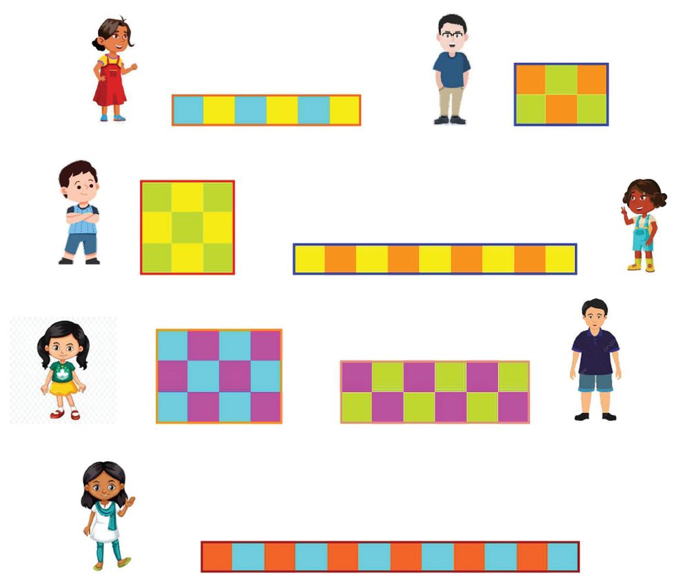
Rectangle Math
10
Rectangle Math Squares and Rectangles Some children are making rectangles by joining small squares.
111


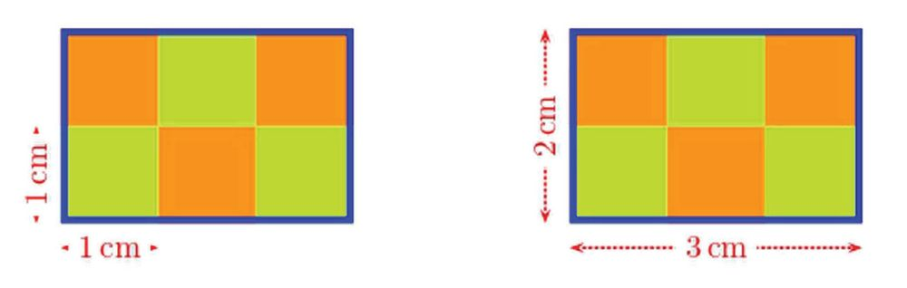

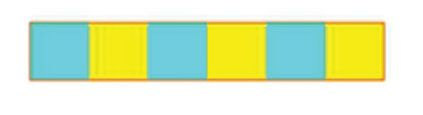

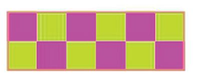
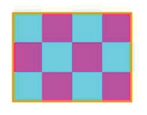

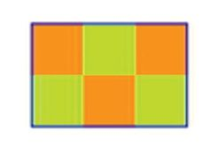
Standard V - Mathematics
All small squares have sides of 1 centimetre. Can you write the width and height of all the rectangles in the picture? For example, look at this rectangle:
The width of this rectangle is 3 centimetres and the height is 2 centimetres. Find the widths and heights of all rectangles like this. Rectangle
112
Width (cm)
Height (cm)
3
2


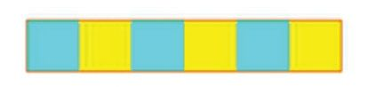


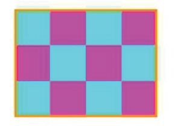


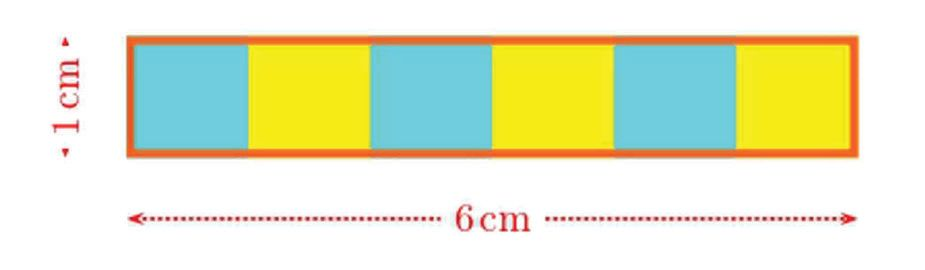
Rectangle Math
Measuring Boundaries The children have also pasted coloured threads along the edges of each rectangle they have made. What is the length of the thread required to paste around the first rectangle?
6 centimetres for each of the top and bottom edges, and 1 centimetre for each of the left and right edges is required. Altogether 6 + 6 + 1 + 1 = 14 centimetres. This length, taken around the rectangle, is called its perimeter. Thus, the perimeter of the rectangle given above is 14 centimetres. Now we can write the perimeters of the rectangles also in our table: Width (cm)
Rectangle
113
Height Perimeter (cm) (cm)
6
1
3
2
3
3
9
1
4
3
6
2
12
1
14


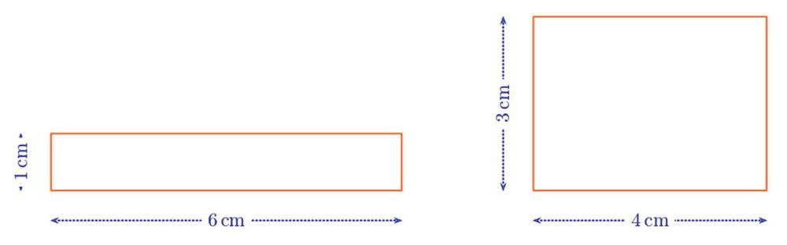
Standard V - Mathematics
Measuring Insides Now, look at the first and the fifth rectangles in our table.
The perimeter of both rectangles is 14 centimetres, isn’t it? But the rectangle on the left is made with 6 small squares and the rectangle on the right is made with 12 small squares. This shows that if two 14 centimetre long strings are cut in two different ways to make the edges of rectangles, the measure of the space inside the rectangles will not be the same:
In other words, the rectangle on the right is more spread out. The measure of the spread is called area. Just as we measure lengths using fixed lengths such as centimetre and metre, we measure areas using predetermined squares. For example The area of a square of sides 1 centimetre is said to be 1 square centimetre.
Two such squares joined together is said to have area 2 square centimetres, three of them joined together is said to have area 3 square centimetres and so on.
114


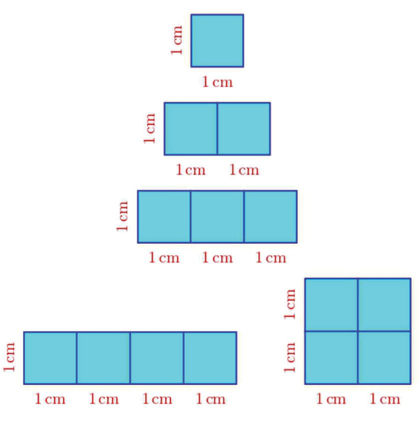


Rectangle Math
Area 1 square centimetre Area 2 square centimetres Area 3 square centimetres
Area 4 square centimetres
Now we can add areas also in our table: Rectangle
Width Height Perimeter Area (cm) (cm) (cm) (sq.cm) 6
1
3
2
3
3
9
1
4
3
6
2
12
1
115
14
6


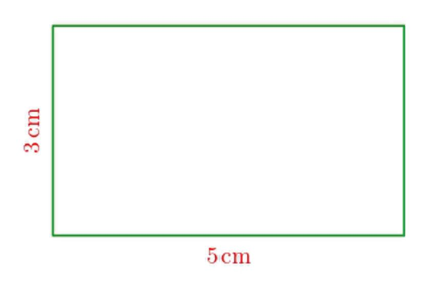
Standard V - Mathematics
The sides of large rectangles (playgrounds, rooms in a building etc.) are measured in metres, right? The areas of such rectangles are measured in terms of a square of side 1 metre. The area of a square of sides 1metre is said to be 1 square metre.
As in the case of small rectangles, two such squares joined together is said to have area 2 square metres, three of them joined together is said to have area 3 square metres and so on.
Calculations Take a look at this rectangle:
What is its perimeter? Adding the lengths of sides one by one, we get: 5 + 3 + 5 + 3 = 16 Thus the perimeter can be calculated as 16 centimetres. Or we can take sides of the same lengths together, and calculate the perimeter as twice 5 and twice 3. (5 × 2) + (3 × 2) = 10 + 6 = 16 Is there any other way? Twice 5 and twice 3 is twice 8, isn’t it? (5 × 2) + (3 × 2) = (5 + 3) × 2 = 8 × 2 = 16
116
No need of big squares to measure the playground? How so?
This little has everything squared away


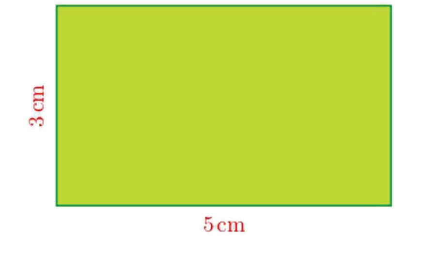
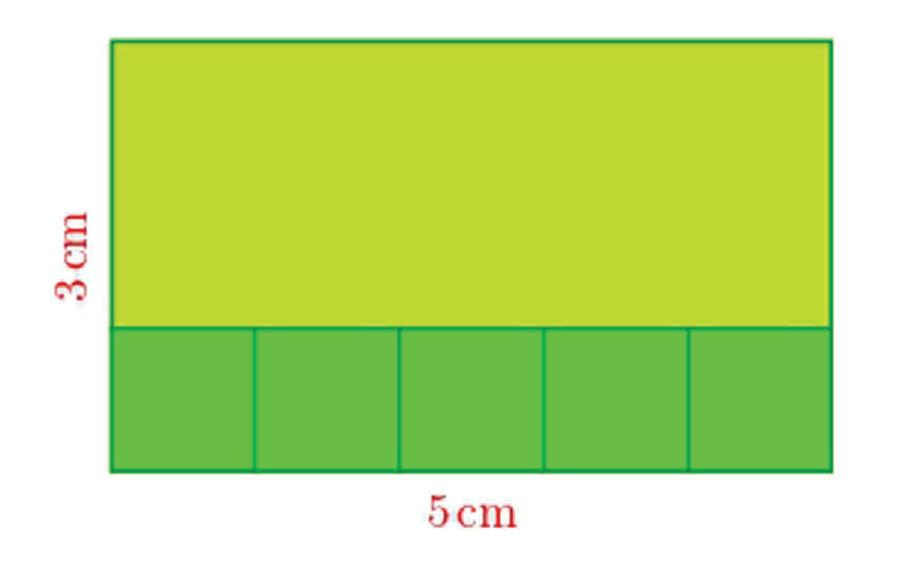
Rectangle Math
Can you calculate, the perimeter of a rectangle of sides 10 centimetres and 5 centimetres in a similar way? In general, The perimeter of a rectangle is twice the sum of its sides.
Using this, can’t you mentally calculate the perimeters of the rectangles with lengths of sides as below? (i) 6 centimetres, 3 centimetres (ii) 13 centimetres, 7 centimetres (iii) 6 centimetres, 6 centimetres (iv) 25 metres, 15 metres (v) 34 metres, 16 metres Now how do we compute the area of the rectangle seen earlier?
For that, we’ll have to calculate the number of small squares of side 1 centimetre that can fit inside it. First let’s put one row of such squares along the bottom side. How many?
117


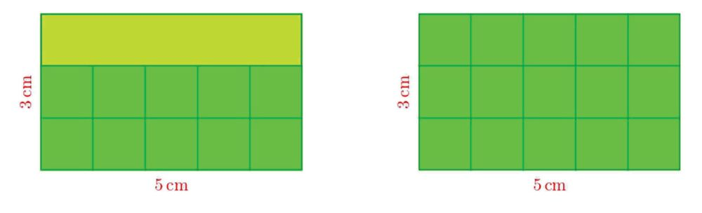
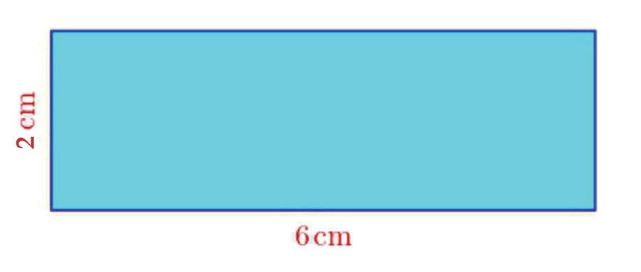
Standard V - Mathematics
How many such rows can we stack inside the rectangle?
So, what’s the area of the rectangle? 3 rows of 5 squares each. 3 × 5 = 15 squares in all. The area is 15 square centimetres. Can you now calculate the area of the rectangle given below?
How many squares of side 1 centimeter can we arrange along the bottom side? How many such rows can be stacked inside the rectangle? How many squares in all? Now, how do we state the general method to calculate the area of a rectangle? The area of a rectangle is the product of the lengths of its sides.
Note that if the lengths of the sides are in centimetres, the area is in square centimetres, and if the lengths of the sides are in metres, then the area is in square metres.
118


Rectangle Math
Now try these problems: (1) Calculate the areas of the rectangles with lengths of sides as below: (i) 6 centimetres, 3 centimetres
(ii) 12 centimetres, 5 centimetres
(iii) 10 centimetres, 10 centimetres (iv) 8 metres, 5 metres (v) 11 metres, 7 metres (2) Draw rectangles of area and perimeter as below:
(i) 12 square centimetres, 14 centimetres (ii) 12 square centimetres, 16 centimetres (iii) 12 square centimetres, 26 centimetres (iv) 5 square centimetres, 12 centimetres (v) 8 square centimetres, 12 centimetres (vi) 9 square centimetres, 12 centimetres
Some Other Shapes Take a look at this figure made with eerkkil bits:
How many pieces of eerkkil are needed to make this? And the length of each is also given, isn’t it?
119


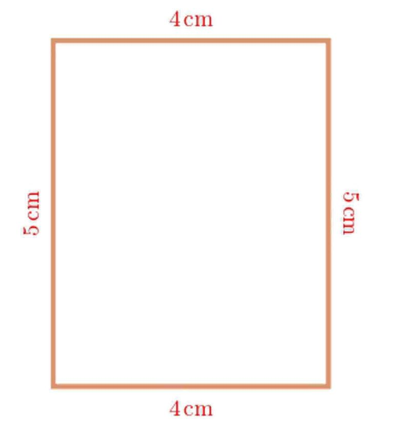
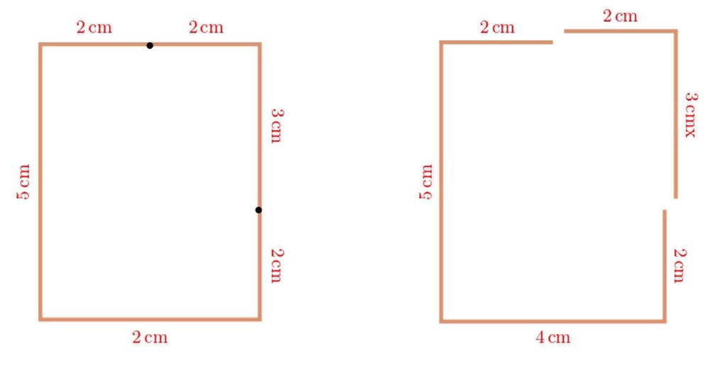
Standard V - Mathematics
Adding up all these, 4 + 5 + 2 + 3 + 2 + 2 = 18 Thus to make this, we can first cut out a piece of eerkkil 18 centimetres long and then cut it into six pieces with the lengths as above. There’s another way to make this figure. First make a rectangle like this:
Mark lengths on the top and the right as shown below and cut out the pieces:
4 cm
120


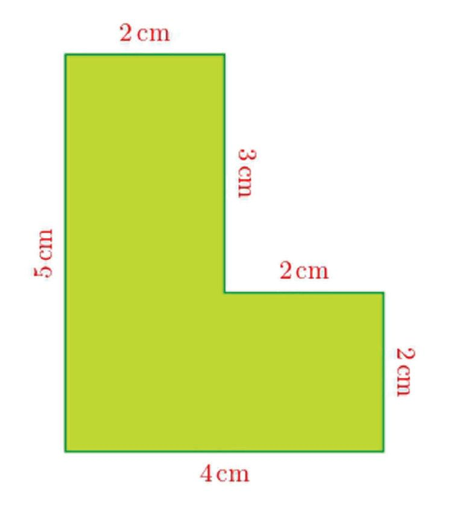
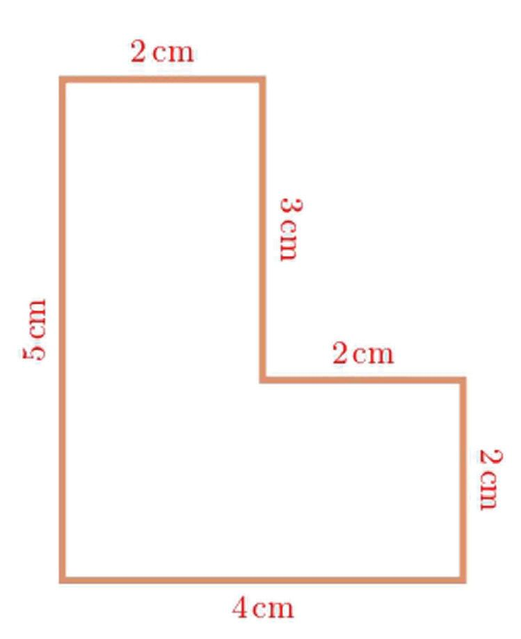
Rectangle Math
Now if we replace the removed bits as below, we get the earlier figure right?
All the eerkkil used to make the rectangle are used in this figure also. In the language of mathematics, the rectangle and this figure have the same perimeter. Now let’s cut out this figure from a sheet of paper:
What is its area?
121


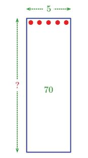
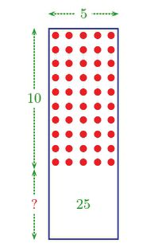
Standard V - Mathematics
We can consider it as two rectangles joined together:
So to compute the area, we add the areas of these two rectangles: (4 × 2) + (2 × 3) = 8 + 6 = 14 The area of this figure is 14 square centimetres. This can be done in another way. We can make this figure by first cutting out a big rectangle and then cutting off a smaller rectangle from it:
അപ്്പപോൾ മിച്ചമുള്ള ഭാഗത്തെ പരപ്പളവ്, വലിയ ചതുരത്തിന്റെ പരപ്പളവിൽ
122


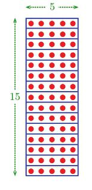
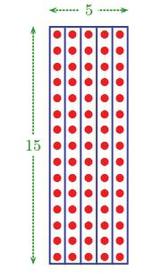
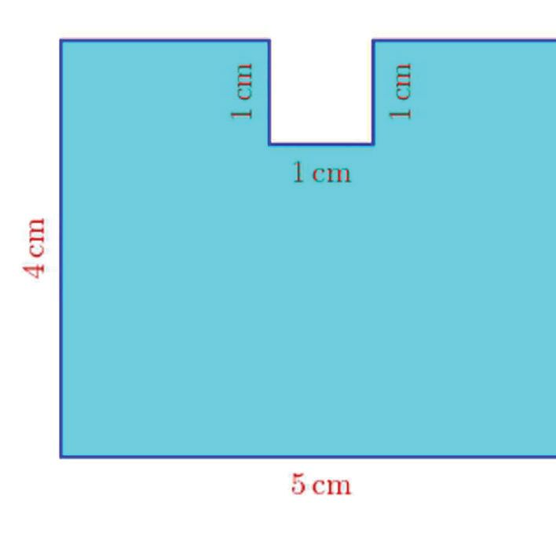
Rectangle Math
So, we get the area of the figure by subtracting the area of the smaller rectangle from the area of the larger rectangle: (4 × 5) − (2 × 3) = 20 – 6 = 14 Did you notice something here? When we removed the small rectangle from the larger one, the area was reduced, but there was no change in the perimeter. Can we cut off a small rectangle from a larger one in such a way that the area is decreased, but the perimeter is increased? Try! Now compute the perimeter and area of each of the shapes below:
123


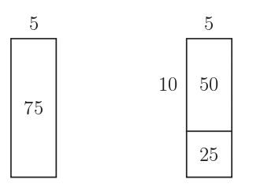
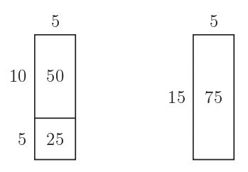
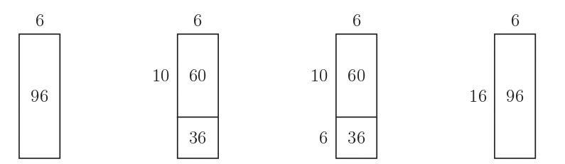
Standard V - Mathematics
124